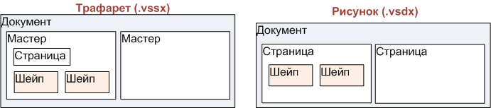
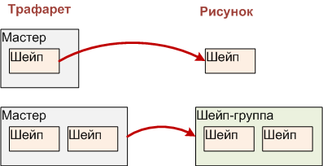

|
Форум visio.getbb.ru |
О форумах
Библиотека | Частые вопросы | Литература | Склад материалов Visio Navigator | Blog | Полезные ссылки | О сайте История Visio | Продукты Visio |
| Для русскоязычных пользователей Visio. Начинающих и профессионалов. Где взять, как сделать, что купить и т.д. |
Трафарет
Трафарет - это тоже документ Visio и его структура в какой-то степени напоминает структуру документа с рисунком. Но в то же время имеет существенные отличия.
Основное отличие в том, что такой документ не содержит собственно рисунка. То есть отсутствуют входящие страницы, входящие в них шейпы и т.д.
Зато имеется аналог трафарета документа - коллекция Masters. Собственно, это и есть основное содержание трафарета.
Masters - коллекция мастеров.
Каждый Master содержит данные о странице, коллекцию шейпов и иконку (PageSheet, Shapes, Icon).
Shapes - коллекция, которая состоит из одного или нескольких шейпов.
Если проводить параллели между трафаретом и рисунком, то мы видим схожие структуры, но несколько отличающиеся порядком упаковки.
В рисунке страницы и шейпы последовательно упакованы друг в друга.
В трафарете на уровне страницы выступает мастер. А в мастере страница и коллекция шейпов лежат на одном уровне. В общем-то это понятно - если страница может быть только одна, то и лишнего уровня иерархии вводить не требуется.
Нужно отметить, что трафарет, так же как и документ-рисунок, может включать в себя и VBA проект. То есть файл трафарета может содержать макросы и иметь расширение .vssm. И тогда, открыв редактор VBA мы увидим и VBA проект основного документа, и все VBA проекты, размещенные во внешних трафаретах.
Наверное стоит также перечислить остальные разделы (помимо Masters), хранящиеся в файле трафарета.
- DocumentProperties
- DocumentSettings
- Colors
- FaceNames
- StyleSheets
- DocumentSheet
- Pages
- Windows
Содержимое этих разделов при желании легко посмотреть, если открыть в текстовом редакторе трафарет, сохраненный в XML формате.
Мастер переносится на страницу
Как отмечено выше, мастер может содержать один или несколько шейпов. Что же происходит, когда пользователь переносит мастер на страницу рисунка?
Если мастер содержал один шейп, то на странице рисунка тоже появится один шейп.
Если мастер содержал несколько шейпов, то на странице рисунка появится новое образование - группа, которой в мастере не было. И уже группа будет содержать те шейпы, которые были в исходном мастере.
Перечень литературы
05.10.2022
14.05.2022
05.06.2021
12.11.2020
17.09.2020
21.08.2020
21.01.2019
04.01.2019
17.04.2013
24.09.2011
13.10.2006
10.10.2006
26.03.2006